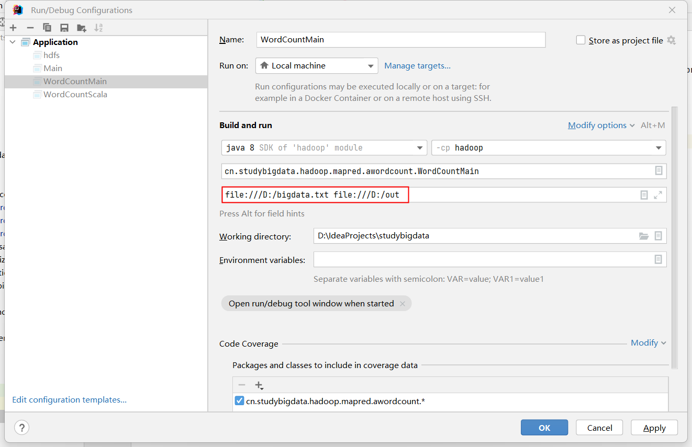

词频统计
MapReduce 的第一课
案例概览¶
本案例统计一段文本里每个单词出现的次数，是 MapReduce 最经典的入门案例。
业务问题¶
给定任意文本，回答"每个单词出现了几次"。它看起来简单，却是所有"分组 + 累加"类需求的原型——后面绝大多数案例都是把 <word, 1> 换成别的 key/value。
输入数据与预期输出¶
输入 bigdata.txt，3 行：
预期输出 3 行，按单词升序：
| 单词 | 次数 |
|---|---|
| a | 3 |
| b | 2 |
| c | 1 |
前置与后继¶
| 关系 | 案例 | 承接的知识点 |
|---|---|---|
| 本案例 | 词频统计 | 分而治之的基本形态 |
| 后继 | 分组汇总 | 把 1 换成真实数值 |
| 后继 | Combiner | 在 map 端预聚合 |
理论篇：分而治之怎么落到代码¶
一个思想实验¶
假设有 1 GB 文本、单机能数但慢。MapReduce 的做法是：把文本切成很多块，每台机器数自己那块里每个词的局部次数，最后把"同词的局部次数"加起来。
| 阶段 | 谁在做 | 产出 |
|---|---|---|
| 切块并行数 | 多个 map 任务 | 每个词一堆 <word, 局部次数> |
| 合并同词 | 框架（Shuffle） | 同词进同一个 reduce |
| 求和 | reduce 任务 | <word, 总次数> |
关键不在"数"，而在"框架保证同词进同一个 reduce"——你不用自己搬数据。
map 输出的是 <单词, 1> 不是 <单词, 单词>¶
这是初学者最容易绕不过去的弯：value 为什么是常量 1 而不是单词本身？
| 写法 | 含义 | 问题 |
|---|---|---|
<word, word> |
把单词再发一遍 | reduce 端还得自己数个数，没意义 |
<word, 1> |
发一个计数器 | reduce 把一堆 1 加起来即可 |
1 是一个"占位计数"。后续案例里这个 1 会被换成工资、金额等真实数值，但"map 发计数、reduce 做加法"的结构不变。
框架负责排序与分组¶
map 输出的 <word, 1> 不会直接进 reduce。中间经过 Shuffle：框架先按 key 排序，再把相同 key 的 value 收进同一个 Iterable。
把输入 bigdata.txt 的 3 行进这四个阶段 跑一遍：
digraph MapReduce {
rankdir=LR;
compound=true;
newrank=true;
graph [fontname="Helvetica", pad=0.4, nodesep=0.4, ranksep=0.9,
splines=spline];
node [fontname="Helvetica", shape=box, style="rounded,filled",
fillcolor="#F8F9FA", color="#ADB5BD", penwidth=1.2,
margin="0.15,0.08"];
edge [fontname="Helvetica", color="#868E96", arrowsize=0.7];
subgraph cluster_in {
label="输入 bigdata.txt";
style="rounded,filled"; color="#74C0FC"; fillcolor="#E7F5FF";
I1 [label="第 1 行：a b c", group=g1];
I2 [label="第 2 行：a b", group=g2];
I3 [label="第 3 行：a", group=g3];
}
subgraph cluster_map {
label="Map 阶段";
style="rounded,filled"; color="#FFA94D"; fillcolor="#FFF4E6";
M1 [label=<<a,1> <b,1> <c,1>>, group=g1];
M2 [label=<<a,1> <b,1>>, group=g2];
M3 [label=<<a,1>>, group=g3];
}
subgraph cluster_shuffle {
label="Shuffle（框架负责）";
style="rounded,filled"; color="#FFD43B"; fillcolor="#FFF9DB";
G1 [label=<<a, [1,1,1]>>, group=g1];
G2 [label=<<b, [1,1]>>, group=g2];
G3 [label=<<c, [1]>>, group=g3];
}
subgraph cluster_reduce {
label="Reduce 阶段";
style="rounded,filled"; color="#51CF66"; fillcolor="#EBFBEE";
R1 [label="reduce：1+1+1", group=g1];
R2 [label="reduce：1+1", group=g2];
R3 [label="reduce：1", group=g3];
}
subgraph cluster_out {
label="输出 part-r-00000";
style="rounded,filled"; color="#B197FC"; fillcolor="#F3F0FF";
O1 [label="a → 3", group=g1];
O2 [label="b → 2", group=g2];
O3 [label="c → 1", group=g3];
}
// 真实数据流
I1 -> M1;
I2 -> M2;
I3 -> M3;
M1 -> G1;
M1 -> G2;
M1 -> G3;
M2 -> G1;
M2 -> G2;
M3 -> G1;
G1 -> R1 -> O1;
G2 -> R2 -> O2;
G3 -> R3 -> O3;
// 关键：不可见边，把每个 G 的入度补齐到 3 条
// G2 实际缺 M3，G3 实际缺 M2、M3
M3 -> G2 [style=invis, weight=1];
M2 -> G3 [style=invis, weight=1];
M3 -> G3 [style=invis, weight=1];
}
注意中间的交叉线：a 的 1 来自 3 个不同的 map 输出，却被收进同一个 Iterable —— 这就是"框架保证同 key 进同 reduce"。图中的 3 个 map / reduce 框是3 次调用，不是 3 个并行任务（默认 reduce 数仍是 1）。
同一条链路压缩成文字版：
map 输出: <a,1> <b,1> <c,1> <a,1> <b,1> <a,1>
排序分组后: <a,[1,1,1]> <b,[1,1]> <c,[1]>
reduce 求和: <a,3> <b,2> <c,1>
这一步是后面所有案例的共同底座——只要 key 设计对了，聚合交给框架。
常规词频统计¶
先看不用 Hadoop 时，这段逻辑本来长什么样。
单机 Java 版¶
读文件、切词、用 HashMap 累加。输入用文件块物化到本章工作目录——FileReader 读到的就是这三行：
```text file=bigdata.txt a a b a b c
```java
Map<String, Integer> counts = new HashMap<>();
try (BufferedReader reader = new BufferedReader(new FileReader("bigdata.txt"))) {
String line;
while ((line = reader.readLine()) != null) {
for (String word : line.split(" ")) {
counts.put(word, counts.getOrDefault(word, 0) + 1);
}
}
}
counts.forEach((word, count) -> System.out.println(word + "\t" + count));
直接用
FileReader每次read()只读一个字符，频繁访问磁盘效率极低。BufferedReader一次性读入一大块数据到内存缓冲区，后续读取直接从内存获取，速度提升非常明显。
它其实已经包含 map 和 reduce¶
| 单机版代码 | 对应的 MapReduce 阶段 |
|---|---|
line.split(" ") 后逐词处理 |
map：一行切成若干单词 |
getOrDefault(word, 0) + 1 |
reduce：同词计数累加 |
区别只在于：单机版没有显式的中间产物 <word, 1>，HashMap 把"发计数"和"加起来"两步合并成了一次 put。
它成立的前提¶
这段代码能跑对，是因为默认了三件事：
| 隐含假设 | 数据变大后 |
|---|---|
| 文件能被一台机器读完 | 1 TB 文本单机装不下 |
| 所有单词的结果放得进内存 | 词典一大，HashMap 先撑爆 |
| 只有一台机器在算 | 单机算力有上限，加机器没用 |
三条里任何一条不成立，这段逻辑就失效——而这正是 MapReduce 要解决的问题。
从 HashMap 到 Shuffle¶
| 单机 Java | MapReduce |
|---|---|
HashMap 让同词归到一起 |
Shuffle 让同 key 进同一个 reduce |
getOrDefault(word, 0) + 1 |
reduce 遍历 Iterable 累加 |
| 单机顺序读 | 文件切块，多机各读一块 |
| 结果留在内存 | 中间结果落盘，可跨机器传输 |
| 输出顺序取决于哈希 | 输出按 key 升序 |
要写的业务逻辑一行没变，变的是"谁负责把同词的数据搬到一起"。下面就用 MapReduce 重写它。
实训篇：实现词频统计¶
本章的 jshell 会话由一个引导块开路：会话建立时自动执行，把 map / reduce 被框架调用那一刻的入参和收集输出的 Context 准备好（幂等，重放时重跑无害）：
```java setup // 脚手架：模拟"框架调用你"的那一刻——map/reduce 的入参就位，输出收集进 MockContext import org.apache.hadoop.io.IntWritable; import org.apache.hadoop.io.LongWritable; import org.apache.hadoop.io.Text; import java.util.ArrayList; import java.util.Arrays; import java.util.List;
class MockContext {
List
// map 的世界：当前行 value、行偏移 offset（本案例不使用）、收集输出的 context
Text value = new Text("a b c a b"); // 输入前两行拼在一起，凑出发射流
// reduce 的世界：当前词 key、同词的 value 列表（对应图解里 a 的
分工很清楚：
-
框架负责什么时候调用你、在哪台机器上调用、数据从哪来；
-
开发者只填中间那一小段转换逻辑。
这也是 MapReduce 和自己手写并发程序最大的区别——并行部分完全不在你的代码里：框架把每个 map / reduce 任务作为一个独立的 JVM 进程，调度到不同机器上执行。你的类里没有一行进程或线程相关的代码。
尖括号里那四个泛型。它们按固定顺序规定了 map 的入参和出参：Mapper<LongWritable, Text, Text, IntWritable>
| 位置 | 泛型实参 | 作用 |
|---|---|---|
| 第 1 个 | 输入 key 的类型 | map 第一个参数的类型 |
| 第 2 个 | 输入 value 的类型 | map 第二个参数的类型 |
| 第 3 个 | 输出 key 的类型 | context.write 第一个参数的类型 |
| 第 4 个 | 输出 value 的类型 | context.write 第二个参数的类型 |
对照整条数据流向就清楚了：
```java demo map(输入 key, 输入 value, Context) → context.write(输出 key, 输出 value)
另外，`map` 会被反复调用（每行一次），但这个类是**框架只 new 一次**的——`map` 方法里才是每次调用独立的世界。
## 为什么要自己包装一层类型
回头看刚才那四个位置：为什么不直接填熟悉的 `String`、`int`，而是 `Text`、`IntWritable`、`LongWritable`？
它们都实现了 Hadoop 的 `Writable` 接口。原因是 MapReduce 的 key/value 要跨网络传输、要落盘，因此必须能序列化；而 Java 原生的 `String`、`Integer` 序列化结果冗余过多，所以 Hadoop 专门定义了一套更紧凑的包装类型。
| 类型 | 对应 Java 类型 | 本案例中的角色 |
| -------------- | ----------------- | ----------------------------------------------- |
| `Text` | `String`（UTF-8） | map 输出的单词，也是 reduce 的 key |
| `IntWritable` | `int` | map 发出的计数 `1`，reduce 累加的结果 |
| `LongWritable` | `long` | map **输入** 的 key：当前行在文件中的字节偏移量 |
用法上只需记住两点：`.get()` 取出包装的原生值（`value.get()` 得到 `int`），构造函数直接传原生值（`new IntWritable(1)`）。
> 顺带解决一个高频疑惑：`Mapper<LongWritable, ...>` 里的第一个 `LongWritable` 是输入行的字节偏移量，**本案例用不到它**——`map` 方法从头到尾没碰过这个 `key`。它既不是行号，也不是单词，只是 TextInputFormat 规定必须带的一个位置标记。
## 步骤一：准备数据
先把输入物化到本章工作目录（随隧道镜像上传到 node0，`hdfs dfs -put` 在远端才找得到它）：
```text file=bigdata.txt
a
a b
a b c
[zhangsan@node0 ~]$ hdfs dfs -mkdir -p /input
[zhangsan@node0 ~]$ hdfs dfs -put bigdata.txt /input/bigdata.txt
输入是纯文本，无需表头、无需特殊处理。
步骤二：实现 Mapper¶
每行调用一次 map，把行切成单词，每个单词发一个 <word, 1>。
String[] wordArray = value.toString().split(" ");
IntWritable one = new IntWritable(1);
for (String word : wordArray) {
context.write(new Text(word), one);
}
步骤三：实现 Reducer¶
遍历同一单词的 value 列表，累加后输出一次。
int count = 0;
for (IntWritable value : values) {
count += value.get();
}
context.write(key, new IntWritable(count));
context.write 在循环外面——每个单词只输出一行。如果误写进循环，会退化成"逐条原样输出"。
步骤四：配置作业¶
map 输出与最终Reduce输出的 key/value 类型在这里一致，所以两段配置看起来重复；一旦 value 类型变化（比如下一案例换成工资），两者就要分开写。
```java demo Configuration conf = new Configuration(); Job job = Job.getInstance(conf);
job.setInputFormatClass(TextInputFormat.class);
job.setOutputFormatClass(TextOutputFormat.class);
job.setJarByClass(WordCountMain.class);
job.setMapperClass(WordCountMapper.class);
job.setReducerClass(WordCountReducer.class);
job.setMapOutputKeyClass(Text.class);
job.setMapOutputValueClass(IntWritable.class);
job.setOutputKeyClass(Text.class);
job.setOutputValueClass(IntWritable.class);
FileInputFormat.setInputPaths(job, new Path(args[0]));
FileOutputFormat.setOutputPath(job, new Path(args[1]));
job.waitForCompletion(true);
```
步骤五：Windows运行调试¶
这样我们就可以读取本地文件，进行代码调试。

Windows本地调试时的输入输出路径格式字符串尤其要注意： file:///D:/bigdata
步骤六：配置 pom.xml¶
打包要办两件事：编译时找得到 Hadoop 的类，运行时找得到程序入口。
依赖只要一个。pom.xml 以文件块物化到本章工作目录（一次给全，含步骤七要配的主类）：
xml file=pom.xml
<?xml version="1.0" encoding="UTF-8"?>
<project xmlns="http://maven.apache.org/POM/4.0.0"
xmlns:xsi="http://www.w3.org/2001/XMLSchema-instance"
xsi:schemaLocation="http://maven.apache.org/POM/4.0.0 http://maven.apache.org/xsd/maven-4.0.0.xsd">
<modelVersion>4.0.0</modelVersion>
<groupId>com.studybigdata</groupId>
<artifactId>hadoop</artifactId>
<version>1.0-SNAPSHOT</version>
<packaging>jar</packaging>
<dependencies>
<dependency>
<groupId>org.apache.hadoop</groupId>
<artifactId>hadoop-client</artifactId>
<version>3.1.3</version>
</dependency>
</dependencies>
<build>
<plugins>
<plugin>
<groupId>org.apache.maven.plugins</groupId>
<artifactId>maven-jar-plugin</artifactId>
<version>2.6</version>
<configuration>
<archive>
<manifest>
<mainClass>com.studybigdata.hadoop.mapred.awordcount.WordCountMain</mainClass>
</manifest>
</archive>
</configuration>
</plugin>
</plugins>
</build>
</project>
hadoop-client 是聚合依赖，一次性带齐 HDFS、MapReduce、YARN 的客户端类。版本必须和集群一致，否则运行时报 NoSuchMethodError 这类错。
步骤七：指定主类并打包¶
光打出 jar 还不够——JVM 不知道从哪个类开始执行，运行时会报 Failed to load Main-Class manifest attribute。所以要让 maven-jar-plugin 把主类写进 META-INF/MANIFEST.MF（节选自步骤六的完整 pom）：
<build>
<plugins>
<plugin>
<groupId>org.apache.maven.plugins</groupId>
<artifactId>maven-jar-plugin</artifactId>
<version>2.6</version>
<configuration>
<archive>
<manifest>
<mainClass>com.studybigdata.hadoop.mapred.awordcount.WordCountMain</mainClass>
</manifest>
</configuration>
</plugin>
</plugin>
</plugins>
</build>
工程化路径：三个类的全文（与附录一致）以源码树物化进章工作目录，随隧道镜像上传到 node0，mvn 在远端章目录里编译：
```java file=src/main/java/com/studybigdata/hadoop/mapred/awordcount/WordCountMapper.java package com.studybigdata.hadoop.mapred.awordcount;
import org.apache.hadoop.io.IntWritable; import org.apache.hadoop.io.LongWritable; import org.apache.hadoop.io.Text; import org.apache.hadoop.mapreduce.Mapper;
import java.io.IOException;
public class WordCountMapper extends Mapper
String[] words = value.toString().split(" ");
for(String word: words){
context.write(new Text(word), new IntWritable(1));
}
}
}
java file=src/main/java/com/studybigdata/hadoop/mapred/awordcount/WordCountReducer.java
package com.studybigdata.hadoop.mapred.awordcount;
import org.apache.hadoop.io.IntWritable;
import org.apache.hadoop.io.Text;
import org.apache.hadoop.mapreduce.Reducer;
import java.io.IOException;
public class WordCountReducer extends Reducer
```java file=src/main/java/com/studybigdata/hadoop/mapred/awordcount/WordCountMain.java package com.studybigdata.hadoop.mapred.awordcount;
import org.apache.hadoop.conf.Configuration; import org.apache.hadoop.fs.Path; import org.apache.hadoop.io.IntWritable; import org.apache.hadoop.io.Text; import org.apache.hadoop.mapreduce.Job; import org.apache.hadoop.mapreduce.lib.input.FileInputFormat; import org.apache.hadoop.mapreduce.lib.input.TextInputFormat; import org.apache.hadoop.mapreduce.lib.output.FileOutputFormat; import org.apache.hadoop.mapreduce.lib.output.TextOutputFormat;
import java.io.IOException;
public class WordCountMain { public static void main(String[] args) throws IOException, InterruptedException, ClassNotFoundException {
Configuration conf = new Configuration();
Job job = Job.getInstance(conf);
job.setInputFormatClass(TextInputFormat.class);
job.setOutputFormatClass(TextOutputFormat.class);
job.setJarByClass(WordCountMain.class);
job.setMapperClass(WordCountMapper.class);
job.setReducerClass(WordCountReducer.class);
job.setMapOutputKeyClass(Text.class);
job.setMapOutputValueClass(IntWritable.class);
job.setOutputKeyClass(Text.class);
job.setOutputValueClass(IntWritable.class);
FileInputFormat.setInputPaths(job, new Path(args[0]));
FileOutputFormat.setOutputPath(job, new Path(args[1]));
job.waitForCompletion(true);
}
}
然后打包：bash
mvn clean package
```
产物是 target/hadoop-1.0-SNAPSHOT.jar。它只包含你自己写的类——Hadoop 的依赖由运行时提供，执行 hadoop jar 时框架会自动把它们加进 classpath，所以 jar 里不必打包。
步骤八：运行与验证¶
程序运行¶
配置好 Main-Class 后，运行命令可以省掉类名（两种写法都有效）：
hadoop jar target/hadoop-1.0-SNAPSHOT.jar /input/bigdata.txt /output/wordcount
# 等价写法：显式指定主类
# hadoop jar target/hadoop-1.0-SNAPSHOT.jar com.studybigdata.hadoop.mapred.awordcount.WordCountMain /input/bigdata.txt /output/wordcount
别和步骤四的
job.setJarByClass(WordCountMain.class)搞混：那个告诉框架"把哪个 jar 分发到各节点"，Main-Class告诉 JVM"从哪个类的main()开始跑"。两者作用不同，都得有。
进程状态¶
```shell demo (base) [zhangsan@node0 ~]$ jps 53296 ResourceManager 103345 MRAppMaster 103509 YarnChild 52825 DataNode 52698 NameNode 53419 NodeManager 53052 SecondaryNameNode
在 Hadoop MapReduce on YARN 中，**MapTask 和 ReduceTask 的 JVM 主类都显示为 `YarnChild`**
### 查看结果
输出 3 行，与上面的预期一致：
```text
a 3
b 2
c 1
核对关：行数 = 不同单词数（这里 3）；每行第二个数是该词出现次数。把输入换成更大的文本，结构完全不用改。
小结¶
词频统计把 MapReduce 的核心结构压缩到了最小：map 发 <key, 1>，reduce 求和。
三句话回顾¶
- 分布式计数的关键不是"数"，而是"框架保证同 key 进同 reduce"。
- value 是常量
1这样的占位计数，reduce 把它累加成总数。 - 想换统计维度，通常只改 mapper 里的一个分组键，骨架不变。
词频统计
下一内容：Block、Split、MapTask
附录¶
以下全文作为阅读材料——带包名的完整类不能进 jshell 片段，工程化执行路径见步骤七的源码树物化。
WordCount¶
WordCountMapper¶
```java demo package com.studybigdata.hadoop.mapred.awordcount;
import org.apache.hadoop.io.IntWritable; import org.apache.hadoop.io.LongWritable; import org.apache.hadoop.io.Text; import org.apache.hadoop.mapreduce.Mapper;
import java.io.IOException;
public class WordCountMapper extends Mapper
String[] words = value.toString().split(" ");
for(String word: words){
context.write(new Text(word), new IntWritable(1));
}
}
} ```
WordCountReducer¶
java demo
package com.studybigdata.hadoop.mapred.awordcount;
import org.apache.hadoop.io.IntWritable;
import org.apache.hadoop.io.Text;
import org.apache.hadoop.mapreduce.Reducer;
import java.io.IOException;
public class WordCountReducer extends Reducer<Text, IntWritable, Text, IntWritable> {
@Override
protected void reduce(Text key, Iterable<IntWritable> values, Reducer<Text, IntWritable, Text, IntWritable>.Context context) throws IOException, InterruptedException {
int sum = 0;
for(IntWritable value: values){
sum += value.get();
}
context.write(key, new IntWritable(sum));
}
}
WordCountMain¶
```java demo package com.studybigdata.hadoop.mapred.awordcount;
import org.apache.hadoop.conf.Configuration; import org.apache.hadoop.fs.Path; import org.apache.hadoop.io.IntWritable; import org.apache.hadoop.io.Text; import org.apache.hadoop.mapreduce.Job; import org.apache.hadoop.mapreduce.lib.input.FileInputFormat; import org.apache.hadoop.mapreduce.lib.input.TextInputFormat; import org.apache.hadoop.mapreduce.lib.output.FileOutputFormat; import org.apache.hadoop.mapreduce.lib.output.TextOutputFormat;
import java.io.IOException;
public class WordCountMain { public static void main(String[] args) throws IOException, InterruptedException, ClassNotFoundException {
Configuration conf = new Configuration();
Job job = Job.getInstance(conf);
job.setInputFormatClass(TextInputFormat.class);
job.setOutputFormatClass(TextOutputFormat.class);
job.setJarByClass(WordCountMain.class);
job.setMapperClass(WordCountMapper.class);
job.setReducerClass(WordCountReducer.class);
job.setMapOutputKeyClass(Text.class);
job.setMapOutputValueClass(IntWritable.class);
job.setOutputKeyClass(Text.class);
job.setOutputValueClass(IntWritable.class);
FileInputFormat.setInputPaths(job, new Path(args[0]));
FileOutputFormat.setOutputPath(job, new Path(args[1]));
job.waitForCompletion(true);
}
}
graphviz
digraph MapReduce {
rankdir=LR;
compound=true;
newrank=true;
graph [fontname="Helvetica", pad=0.4, nodesep=0.4, ranksep=0.9,
splines=spline];
node [fontname="Helvetica", shape=box, style="rounded,filled",
fillcolor="#F8F9FA", color="#ADB5BD", penwidth=1.2,
margin="0.15,0.08"];
edge [fontname="Helvetica", color="#868E96", arrowsize=0.7];
subgraph cluster_in {
label="输入 bigdata.txt";
style="rounded,filled"; color="#74C0FC"; fillcolor="#E7F5FF";
I1 [label="第 1 行：a b c", group=g1];
I2 [label="第 2 行：b c a", group=g2];
I3 [label="第 3 行：c a b", group=g3];
}
subgraph cluster_map {
label="Map 阶段";
style="rounded,filled"; color="#FFA94D"; fillcolor="#FFF4E6";
M1 [label=<<a,1> <b,1> <c,1>>, group=g1];
M2 [label=<<b,1> <c,1> <a,1>>, group=g2];
M3 [label=<<c,1> <a,1> <b,1>>, group=g3];
}
subgraph cluster_shuffle {
label="Shuffle（框架负责）";
style="rounded,filled"; color="#FFD43B"; fillcolor="#FFF9DB";
G1 [label=<<a, [1,1,1]>>, group=g1];
G2 [label=<<b, [1,1,1]>>, group=g2];
G3 [label=<<c, [1,1,1]>>, group=g3];
}
subgraph cluster_reduce {
label="Reduce 阶段";
style="rounded,filled"; color="#51CF66"; fillcolor="#EBFBEE";
R1 [label="reduce：1+1+1", group=g1];
R2 [label="reduce：1+1+1", group=g2];
R3 [label="reduce：1+1+1", group=g3];
}
subgraph cluster_out {
label="输出 part-r-00000";
style="rounded,filled"; color="#B197FC"; fillcolor="#F3F0FF";
O1 [label="a → 3", group=g1];
O2 [label="b → 3", group=g2];
O3 [label="c → 3", group=g3];
}
I1 -> M1;
I2 -> M2;
I3 -> M3;
// 每个 M 都发射 a、b、c，完全对称
M1 -> G1;
M1 -> G2;
M1 -> G3;
M2 -> G1;
M2 -> G2;
M2 -> G3;
M3 -> G1;
M3 -> G2;
M3 -> G3;
G1 -> R1 -> O1;
G2 -> R2 -> O2;
G3 -> R3 -> O3;
}
```